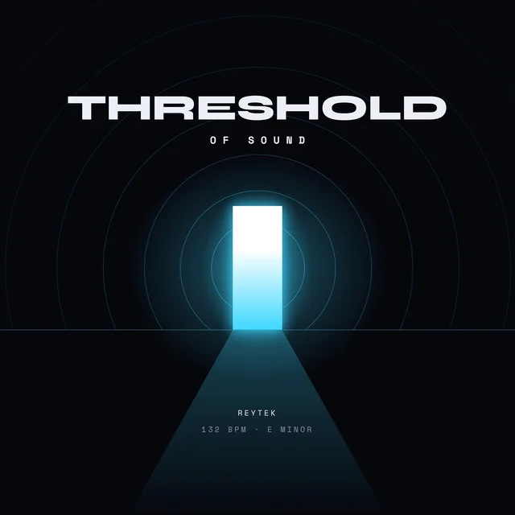
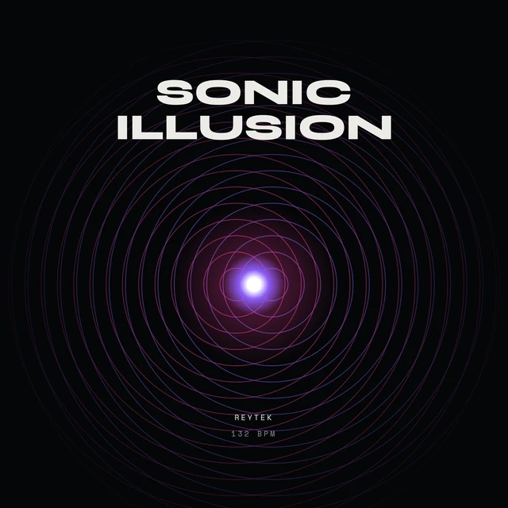
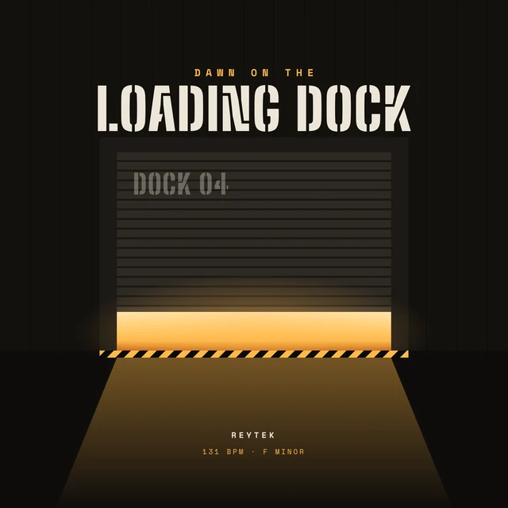
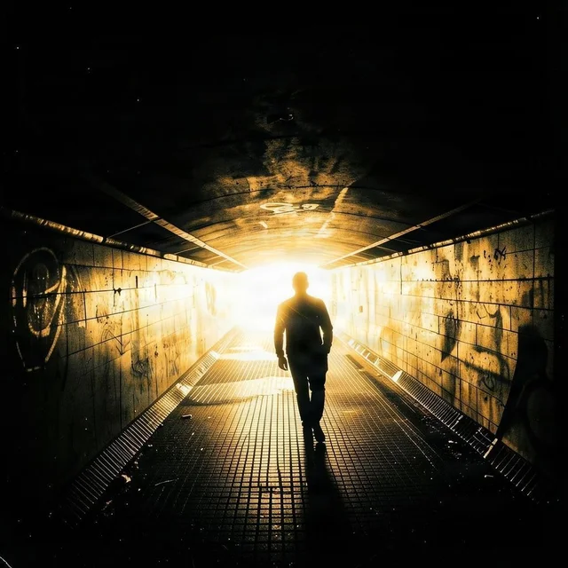
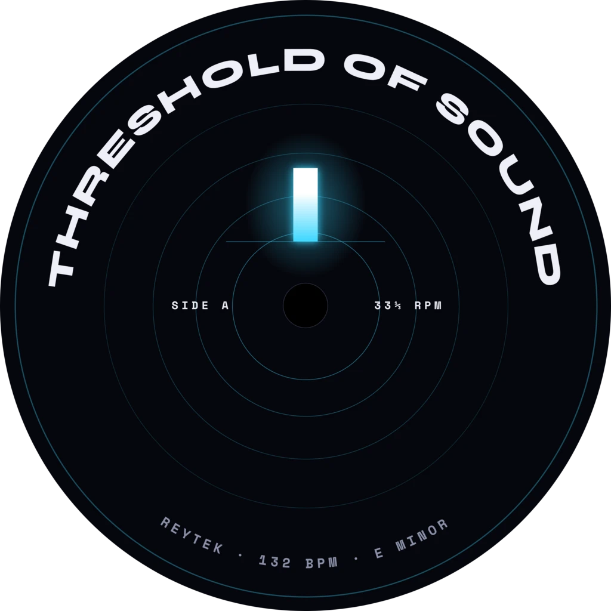
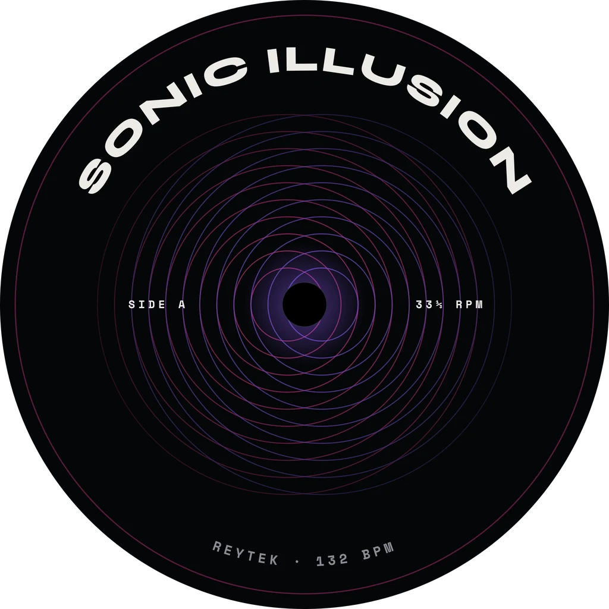
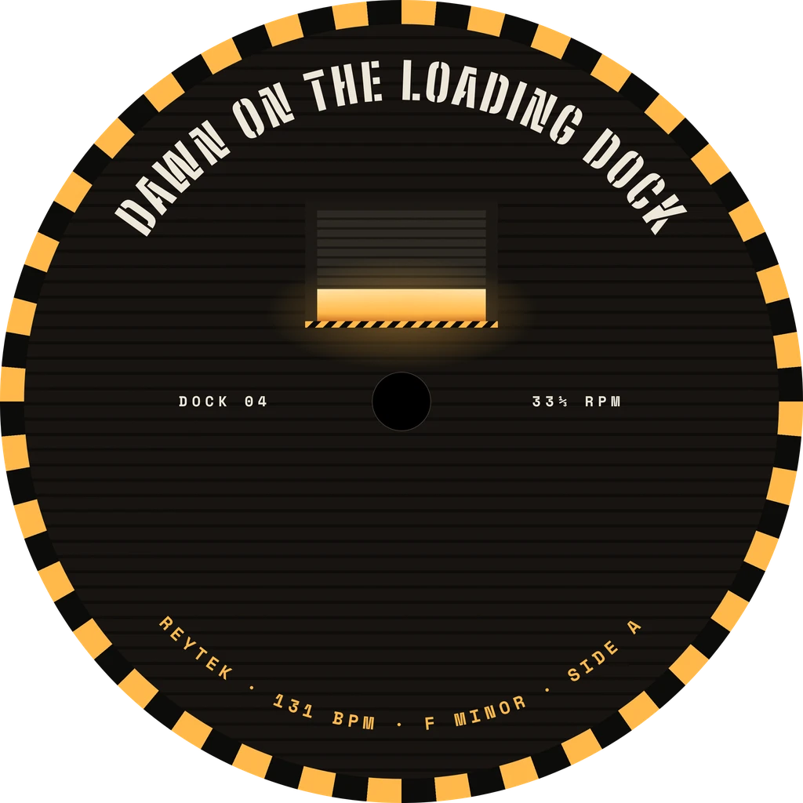

› Art · D/02 Visual
Experiments in light.
Visual work, covers and light. This door is just opening.
› Cover art so far

Threshold of Sound · cover 
Sonic Illusion · cover 
Dawn on the Loading Dock · cover Traces of You · cover 
The Light Was Plain · cover 
Threshold of Sound · label 
Sonic Illusion · label 
Dawn on the Loading Dock · label